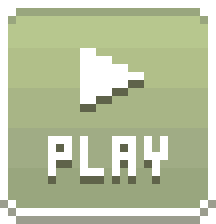
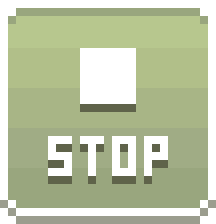

minefinder.glsp
quadris.glsp
tennis.glsp
; the "PLAY" button will run this code in a simple game engine. the api: ; https://github.com/fleabitdev/glsp/blob/master/website/glsp-playground/API.md ; constants (try changing these!) ;----------------------------------------------------------- (let :mine-count 10) (let :grid-width 9) (let :grid-height 9) ; configuring the engine ;----------------------------------------------------------- (def play:width (+ 24 (* :grid-width 16))) (def play:height (+ 67 (* :grid-height 16))) (def play:title "Minefinder") (def play:blurb r#" <p><b>Left click:</b> Reveal tile <p><b>Right click:</b> Place flag "#) ; the toplevel game logic ;----------------------------------------------------------- (let :game-state) ; one of 'waiting, 'playing, 'won or 'lost (let :mines-remaining) ; displayed directly in the ui (let :timer-clock) ; displayed directly in the ui (as an int) (let :tiles-remaining) ; used to detect victory ; this function is also called to initialize the game (defn reset-game () (= :game-state 'waiting) (= :mines-remaining :mine-count) (= :tiles-remaining (* :grid-width :grid-height)) (= :timer-clock 0.0) (reset-grid)) ; "update" functions are called once per frame (defn update-game (dt) (when (eq? :game-state 'playing) (inc! :timer-clock dt) (clamp! :timer-clock 0.0 999.0))) ; the face button ;----------------------------------------------------------- (let :face-focused? #f) ; #t when the face button holds the mouse focus (let :button-x (- (/ play:width 2) 13)) (let :button-y 15) (defn mouse-inside-button? () (and (<= 0 (- (play:mouse-x) :button-x) 25) (<= 0 (- (play:mouse-y) :button-y) 25))) (defn update-button () (let mouse-inside? (mouse-inside-button?)) (when (and (play:pressed? 'lmb) mouse-inside?) ; grab the mouse focus (= :face-focused? #t)) (when (and (play:released? 'lmb) :face-focused?) ; release the mouse focus (= :face-focused? #f) (when mouse-inside? ; the face button has been left-clicked (reset-game)))) (defn draw-button () ; generate some parameters for the `play:draw` calls below (let (face-sprite ..face-flags) (cond ((eq? :game-state 'lost) '(face-x)) ((eq? :game-state 'won) '(face-shades)) ((and (play:down? 'lmb) (not :face-focused?) (<= 0 (play:mouse-x) (- play:width 1)) (<= 0 (play:mouse-y) (- play:height 1))) (cond ((> (play:mouse-x) (/ play:width 2)) '(face-peek)) (else '(face-peek hflip)))) (else '(face-smile)))) ; 1 = sunken. this is used to select a frame of the 'face-button sprite, and also ; used to offset the smiley face itself for a 3d effect (let depth (if (and (mouse-inside-button?) :face-focused?) 1 0)) (play:draw 'face-button :button-x :button-y 'frame depth) (play:draw face-sprite (+ :button-x 5 depth) (+ :button-y 5 depth) ..face-flags)) ; the grid of tiles ;----------------------------------------------------------- (let :grid) ; an array of Tile structs, in row-major order (let :topleft-x 12, :topleft-y 55) ; location of the grid in the back buffer ; offsets which can be used to inspect the eight tiles surrounding a central tile (let :neighbour-offsets '((-1 -1) (0 -1) (1 -1) (-1 0) (1 0) (-1 1) (0 1) (1 1))) ; we could potentially have used `defclass` and `state` here, but the logic ; is simple enough that it wasn't really necessary (defstruct Tile grid-x grid-y ; coordinates of the grid cell, e.g. 3 1 draw-x draw-y ; pixel offset in the back buffer, e.g. 60 81 tile-state ; one of 'hidden, 'flag, 'question or 'revealed mine-state ; one of 'no-mine, 'mine, or 'boom neighbours ; the number of neighbouring cells which contain mines (meth on-left-click () ; left-click only has an effect for tiles displaying [ ] or [?] (unless (eq-any? @tile-state 'hidden 'question) (return)) ; if we're in the 'waiting state, this is the first tile to be revealed (when (eq? :game-state 'waiting) ; start the timer (= :game-state 'playing) (= :timer-clock 1.0) ; if the first tile would contain a mine, we move it elsewhere (when (eq? @mine-state 'mine) (for tile in :grid (when (eq? [tile 'mine-state] 'no-mine) ; add a mine to the destination tile (= [tile 'mine-state] 'mine) (let [grid-x grid-y] tile) (for (dx dy) in :neighbour-offsets (let neighbour (tile-at (+ grid-x dx) (+ grid-y dy))) (unless (nil? neighbour) (inc! [neighbour 'neighbours]))) ; remove a mine from self (= @mine-state 'no-mine) (for (dx dy) in :neighbour-offsets (let neighbour (tile-at (+ @grid-x dx) (+ @grid-y dy))) (unless (nil? neighbour) (dec! [neighbour 'neighbours]))) (break))))) ; reveal this tile (= @tile-state 'revealed) (dec! :tiles-remaining) (cond ((eq? @mine-state 'mine) ; the tile was a mine! the game ends as a loss (= @mine-state 'boom) (= :game-state 'lost)) (else ; if this tile had no adjacent mines, we "flood fill" all similar tiles, and all ; numbered tiles immediately adjacent to those flood-filled tiles (when (== @neighbours 0) (let to-flood (arr @self)) (until (empty? to-flood) (let flood-tile (pop! to-flood)) (for (dx dy) in :neighbour-offsets (let neighbour (tile-at (+ [flood-tile 'grid-x] dx) (+ [flood-tile 'grid-y] dy))) (unless (or (nil? neighbour) (eq-any? [neighbour 'tile-state] 'revealed 'flag)) ; reveal the tile (= [neighbour 'tile-state] 'revealed) (dec! :tiles-remaining) ; if the tile also has no neighbouring mines, recursively process it (when (== [neighbour 'neighbours] 0) (push! to-flood neighbour)))))) ; if we have as many tiles left as there are mines, it's a victory (when (<= :tiles-remaining :mine-count) (= :game-state 'won) (= :mines-remaining 0))))) (meth on-right-click () ; cycle between [flag], [?] and [ ], keeping `:mines-remaining` up-to-date (cond-eq? @tile-state ('hidden (dec! :mines-remaining) (= @tile-state 'flag)) ('flag (inc! :mines-remaining) (= @tile-state 'question)) ('question (= @tile-state 'hidden)))) ; `sunken?` is #t when the lmb is down and the cursor is over the tile (meth draw (sunken?) ; various special cases for rendering the victory and failure screens (when (eq? :game-state 'lost) (cond-eq? @mine-state ('mine (unless (eq? @tile-state 'flag) (play:draw 'mine @draw-x @draw-y) (return))) ('boom (play:draw 'mine-red @draw-x @draw-y) (return)) ('no-mine (when (eq? @tile-state 'flag) (play:draw 'mine-x @draw-x @draw-y) (return))))) (when (and (eq? :game-state 'won) (not (eq? @tile-state 'revealed))) (play:draw 'mine-flag @draw-x @draw-y) (return)) ; the basic rendering pathway (let sprite (cond ((and sunken? (eq-any? @tile-state 'hidden 'question)) 'mine-tile) (else (cond-eq? @tile-state ('hidden 'mine-hidden) ('flag 'mine-flag) ('question 'mine-question) ('revealed 'mine-tile))))) (cond ((eq? @tile-state 'revealed) (play:draw sprite @draw-x @draw-y 'frame @neighbours)) (else (play:draw sprite @draw-x @draw-y))))) ; a reference to the Tile at the given grid coords, or #n for out-of-bounds coords (defn tile-at (grid-x grid-y) (cond ((and (<= 0 grid-x (- :grid-width 1)) (<= 0 grid-y (- :grid-height 1))) [:grid (+ grid-x (* grid-y :grid-width))]) (else #n))) ; a reference to the Tile under the mouse, if any (defn tile-under-mouse () (let rel-x (- (play:mouse-x) :topleft-x)) (let rel-y (- (play:mouse-y) :topleft-y)) (tile-at (div-euclid rel-x 16) (div-euclid rel-y 16))) ; this is called at program start, and also when the face button is clicked (defn reset-grid () ; populate the `:grid` global with new Tile structs (= :grid (arr)) (let grid-coords (arr)) ; used for mine placement (forn (grid-y :grid-height) (forn (grid-x :grid-width) (push! grid-coords (arr grid-x grid-y)) (push! :grid (Tile grid-x grid-y (draw-x (+ :topleft-x (* grid-x 16))) (draw-y (+ :topleft-y (* grid-y 16))) (tile-state 'hidden) (mine-state 'no-mine) (neighbours 0))))) ; place mines. randomly select one empty grid coordinate at a time using `rand` (forn (_ :mine-count) (let (grid-x grid-y) (swap-remove! grid-coords (rand (len grid-coords)))) (= [(tile-at grid-x grid-y) 'mine-state] 'mine) ; update the `neighbours` count for any adjacent tiles (for (dx dy) in :neighbour-offsets (let tile (tile-at (+ grid-x dx) (+ grid-y dy))) (unless (nil? tile) (inc! [tile 'neighbours]))))) ; this delegates to each Tile's `draw` method (defn draw-grid () (let under-mouse (tile-under-mouse)) (for tile in :grid (let sunken? (and (same? under-mouse tile) (play:down? 'lmb) (not :face-focused?) (not (eq? :game-state 'lost)))) (.draw tile sunken?))) ; called once per frame. delegates to the `on-left-click` and `on-right-click` methods (defn update-grid () (when (eq-any? :game-state 'won 'lost) (return)) (unless :face-focused? (let tile (tile-under-mouse)) (unless (nil? tile) (when (play:released? 'lmb) (.on-left-click tile)) (when (play:pressed? 'rmb) (.on-right-click tile))))) ; drawing the play area ;----------------------------------------------------------- (let :white '(255 255 255)) (let :dark-grey '(128 128 128)) (defn draw-play-area () (play:fill 0 0 play:width play:height 192 192 192) (draw-3d-rect 0 0 play:width play:height 3 :white :dark-grey) (draw-3d-rect 9 9 (- play:width 18) 37 2 :dark-grey :white) (draw-3d-rect 9 52 (- play:width 18) (- play:height 61) 3 :dark-grey :white) (draw-7seg 16 15 :mines-remaining) (draw-7seg (- play:width 56) 15 (int :timer-clock))) ; draw an embossed or sunken rectangle (defn draw-3d-rect (x y width height depth nw-rgb se-rgb) (forn (_ depth) (play:fill x y (- width 1) 1 ..nw-rgb) (play:fill x (+ y 1) 1 (- height 2) ..nw-rgb) (play:fill (+ x 1) (- (+ y height) 1) (- width 1) 1 ..se-rgb) (play:fill (- (+ x width) 1) (+ y 1) 1 (- height 2) ..se-rgb) (inc! x) (inc! y) (dec! width 2) (dec! height 2))) ; draw a seven-segment display, showing the given integer value (defn draw-7seg (x y value) (draw-3d-rect x y 41 25 1 :dark-grey :white) ; `value` may be negative if the player places too many flags (cond ((< value 0) (play:draw '7seg-minus (+ x 1) (+ y 1))) (else (play:draw '7seg (+ x 1) (+ y 1) 'frame (% (/ value 100) 10)))) (play:draw '7seg (+ x 14) (+ y 1) 'frame (% (/ (abs value) 10) 10)) (play:draw '7seg (+ x 27) (+ y 1) 'frame (% (abs value) 10))) ; the play:update callback ;----------------------------------------------------------- (defn play:update (dt) (update-game dt) (update-button) (update-grid) (draw-play-area) (draw-button) (draw-grid)) ; initialize the game... ;----------------------------------------------------------- (reset-game)
Downloading data...
Error